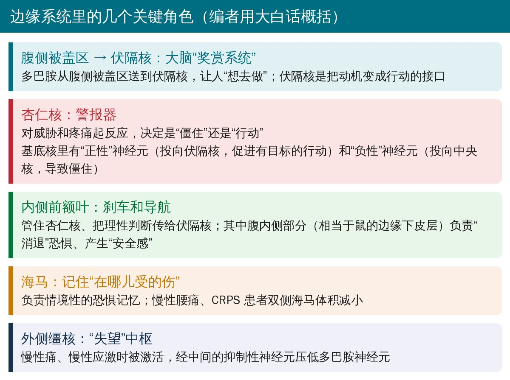
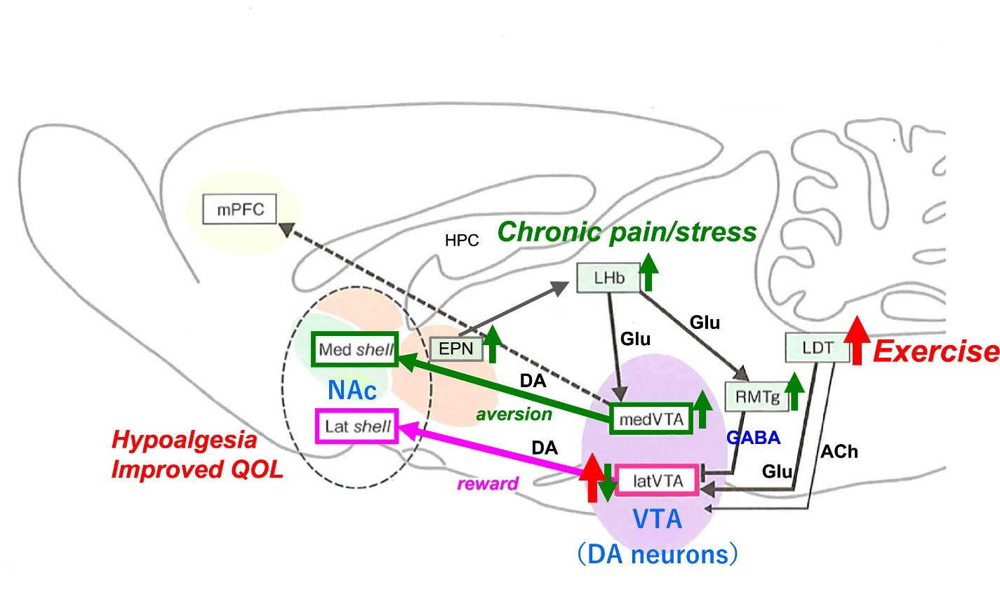
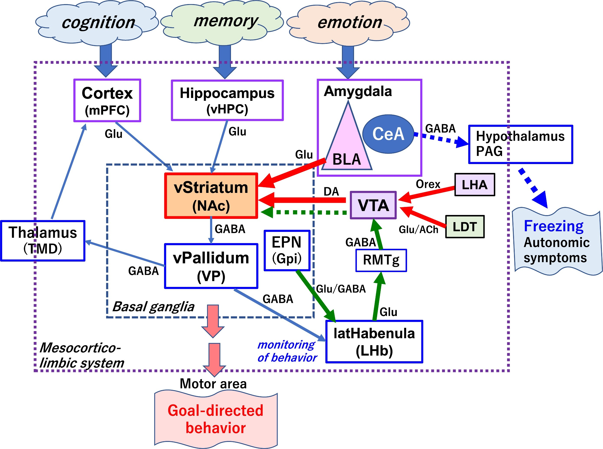
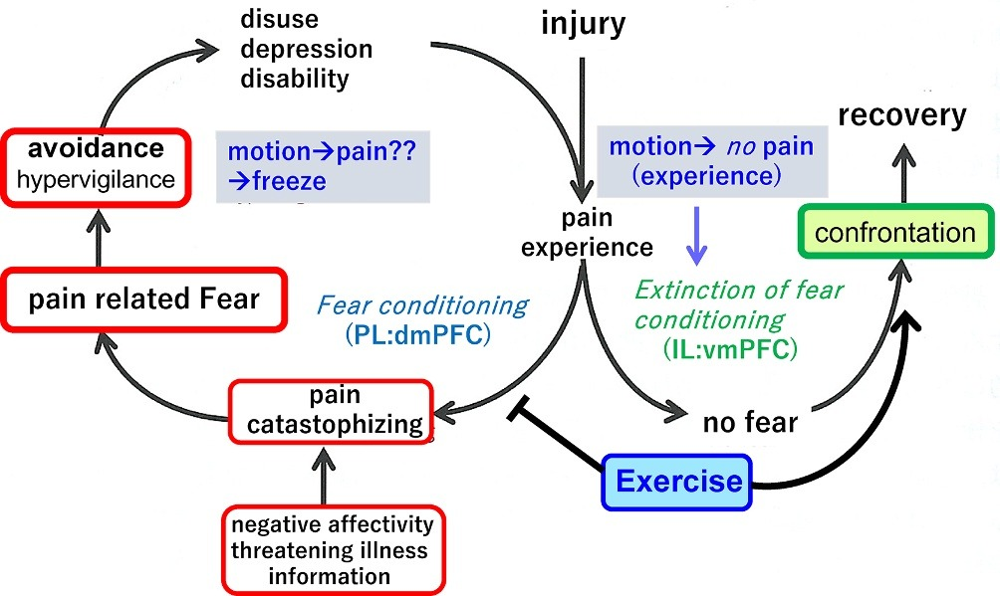
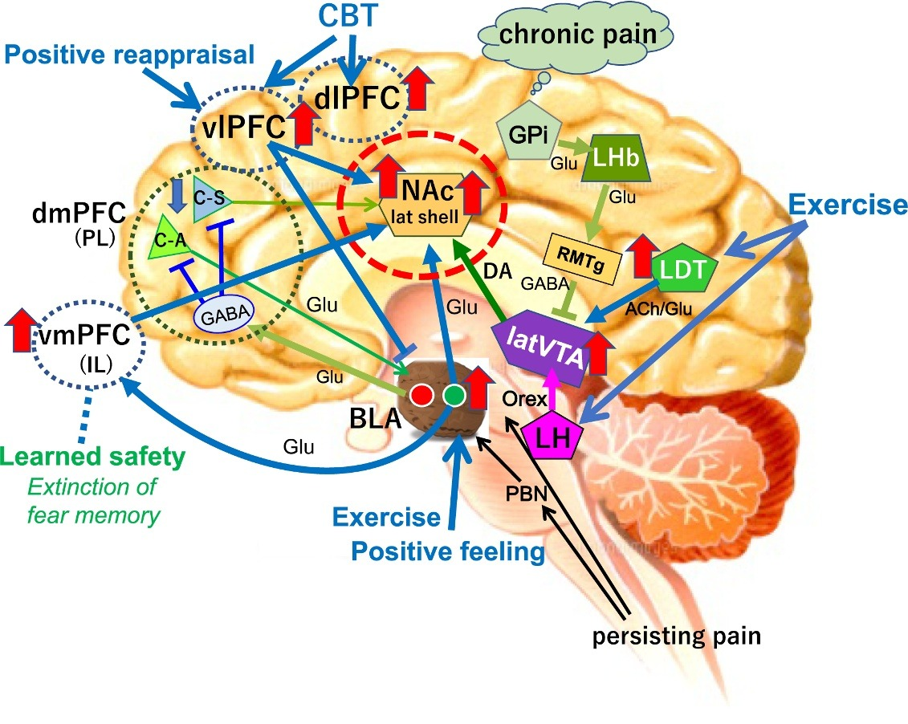

🔖原文信息（编者中文重排）
📚 文献信息
▪ Senba E, Kami K. Exercise therapy for chronic pain: how does exercise change the limbic brain function? Neurobiology of Pain. 2023;14:100143. doi:10.1016/j.ynpai.2023.100143
▪ 作者单位：日本大阪行冈医疗大学物理治疗学科、宝塚医疗大学康复学科、和歌山县立医科大学康复医学科
▪ 文章类型：叙述性综述（神经科学机制为主，大量引用作者团队自己的动物实验）
• 慢性痛不只是“哪里坏了”，大脑的边缘系统（奖赏系统、杏仁核、内侧前额叶、海马）也出了问题：怕痛 → 杏仁核过度兴奋 → 前额叶被压制 → 奖赏系统变弱，人就容易陷入恐惧回避
• 小鼠实验显示，运动能重新激活奖赏系统、打开杏仁核里“去行动”的开关、关小“警报”、削弱恐惧记忆
• 作者的处方思路：选自己喜欢、能带来正面情绪的运动，自己掌握节奏、别贪多，坚持到变成习惯
• 但要记住：机制证据主要来自动物，处方部分是推演，没有给出可直接照用的参数
🔖急性痛和慢性痛的大脑差异（编者整理）
• 发达国家约 15%～20% 的人有慢性痛，女性和老年人更多
• 神经病理性痛、CRPS、带状疱疹后神经痛等能找到起因；纤维肌痛、颞下颌关节紊乱、慢性腰痛、肠易激综合征等属于“痛觉可塑性疼痛”，找不到能解释疼痛的结构异常
• 慢性痛常和抑郁、睡眠障碍一起出现（作者称为“三联征”），还伴随认知下降、过度警觉、动机降低
• 大鼠持续炎症痛时，除了痛觉传导区，还激活了以右侧杏仁核为中心、包括伏隔核、腹侧被盖区、基底节在内的一整套网络——提示疼痛慢性化伴随着“情绪—奖赏”脑区的参与

🔖边缘系统的关键角色（编者用大白话概括）
边缘系统由“情绪”和“奖赏”两台发动机驱动，最终产生“行动”。伏隔核把来自前额叶（认知）、杏仁核（情绪）、海马（经验）的信息整合起来，决定往哪个方向行动；腹侧苍白球和外侧缰核再监控行动是否合适，通过奖赏系统修正。

🔖原文图 2：腹侧被盖区 → 伏隔核的两套多巴胺系统。慢性痛和慢性应激时（绿色箭头），外侧缰核兴奋，激活“内侧系统”（与厌恶相关），同时经吻内侧被盖核压制“外侧系统”；运动时（红色箭头），背外侧被盖核被激活，带动腹侧被盖区外侧的多巴胺神经元投向伏隔核外侧壳，促进奖赏行为
🔖奖赏系统被压下去的两条通路（编者整理）
• 慢性腰痛患者存在奖赏网络功能障碍和多巴胺调节异常；疼痛刺激消失时，健康人的伏隔核会激活，慢性腰痛患者却不会
• 有研究追踪亚急性腰痛患者：初诊时前额叶—伏隔核功能连接偏强的人，1 年后更容易变成慢性；腰痛持续 3 年的人，初诊时背内侧前额叶—杏仁核—伏隔核的白质连接就偏强
• 作者的解读：这些脑区“同步”得太紧，人更容易被怕痛牵着走，不敢动，从而陷入恐惧回避；如果能在初诊时识别这类人，尽早给予运动和认知行为治疗，也许能预防慢性化
🔖运动对大脑做了什么（主要来自作者团队的小鼠实验）
• 除了大脑，运动的镇痛作用还涉及下行疼痛调控系统、脊髓背角抑制性神经元功能的保持、表观遗传改变、肌肉分泌的肌因子等；这篇综述只讲大脑，尤其是边缘系统
• 跑步小鼠的痛觉过敏改善，跑的总距离越长，镇痛效果越好
• 下丘脑外侧的食欲素神经元也被自愿运动激活，可能参与运动镇痛
• 3 周自愿跑轮还增加了大鼠前额叶边缘前区的激活神经元；作者团队也发现运动增加了前额叶的非抑制性（可能是锥体）神经元的激活

🔖原文图 6：作者对运动引起的边缘系统变化的总结（来自啮齿类动物实验）。慢性痛时，脚内核 → 外侧缰核 → 吻内侧被盖核通路压低腹侧被盖区的多巴胺神经元（绿色箭头）；运动经背外侧被盖核和下丘脑外侧食欲素神经元激活多巴胺神经元，同时激活杏仁核基底核里投向伏隔核的正性神经元（红色箭头），使有目标的行动成为可能；杏仁核中央核的抑制性神经元被抑制，僵住反应减少（蓝色虚线）

🔖原文图 7：恐惧回避与疼痛慢性化（基于 Lethem 1983 模型）。受伤疼痛后，负面情绪和吓人的信息导致灾难化思维和强烈恐惧，于是回避活动 → 废用、抑郁、失能 → 更痛；某个动作引起过疼痛，就会“僵住”不再动，即形成恐惧条件反射。反之，体验到“动了也不痛”，恐惧记忆消退，就能面对问题、恢复。运动在其中抑制恐惧条件反射，并可能促进恐惧消退
🔖恐惧条件反射与消退（编者整理）
• 恐惧记忆的形成和消退依赖“前额叶—海马—杏仁核”三角：前额叶的边缘前区（人类为背内侧前额叶）促进恐惧，边缘下区（人类为腹内侧前额叶）促进消退
• 消退不是“删掉”恐惧，而是学到新的“安全记忆”；消退后的恐惧还可能自发恢复、换个环境重现或再次被诱发
• 神经病理性痛小鼠的情境恐惧消退受损，伴海马齿状回新生神经元减少；慢性腰痛和 CRPS 患者双侧海马体积减小
• 作者团队还报道：3 周运动疗法改变了纤维肌痛患者边缘系统的功能连接，且与运动能力改善相关

🔖原文图 9：针对边缘系统的干预。即使有慢性痛，运动和／或正面情绪（例如投入到自己喜欢的事里）、认知行为疗法（认识自己的思维习惯、把行为往积极方向改）都能激活伏隔核、腹侧被盖区、杏仁核、内侧前额叶等，减轻疼痛行为和抑郁；成功的“积极重评”也作用于腹外侧前额叶、伏隔核和杏仁核。作者把这些统称为“以患者为中心的医疗”
🔖运动处方：节奏和坚持（编者整理）
• 从喜欢的开始：只盯着让人讨厌的东西，大脑只会激活“负性”神经元、只会僵住；找到哪怕一点点乐趣，“正性”神经元被激活，才会主动行动。作者说，要对抗的“敌人”其实是过去不爱动的生活方式
• 别贪多：以为越练越有效，反而让交感神经兴奋、疼痛加重；自己掌握节奏
• 到自然里走走：有研究发现，在自然环境散步后杏仁核对恐惧面孔和社交压力的反应下降，在城市里散步则没有
• 坚持到习惯：每周 2～3 次，几周到几个月后由“靠动机”变成“不用想就去做”
• 保持目标感：运动失去目标会变成强迫，认知疗法帮助维持
🔖编者解读
• “恐惧细胞”和“消退细胞”对应反了：图 8 图注说“正性神经元和负性神经元可能分别对应 Duvarci 和 Pare 的‘恐惧细胞’和‘消退细胞’”。按全文逻辑（正性神经元投向边缘下皮层、促进消退），应该是正性对应消退细胞、负性对应恐惧细胞；图 8 本身也把负性标为 F-cells、正性标为 E-cells
• 基底外侧杏仁核的抑制性神经元比例前后不一：一处写 15%～20%，另一处写 10%～15%
• 缩写撞车：TMD 既指“颞下颌关节紊乱”，又被用来指丘脑背内侧核（通常缩写为 MD）；SN 既指黑质，又指“突显网络”；中央执行网络正文写 CEN、图 10 图注写 ECN
• 引用不存在的章节号：文中写“见第 4–4 节”，但全文章节并没有编号
• 笔误：需治疗人数写成“NPT”（应为 NNT）；摘要里“multiple bran networks”（应为 brain）
• 一句话没写完：“外侧基底核的神经元被神经损伤激活，而内侧的那些。谷氨酸能神经元主要被自愿运动激活”——句子在中间断开
• 说法过满：“目前没有药物对这类慢性痛有效”，紧接着又列出神经病理性痛的一线药物；“运动和认知行为疗法安全有效、没有副作用”也过于绝对
• 与自己的论点不一致的证据没有调和：文中引用的 Greenwood 研究显示先运动 6 周反而增强了情境性恐惧记忆，与“运动抑制恐惧条件反射”的论点相反，作者只是并列引用
• 给慢性痛患者讲疼痛科普时，可以用“大脑的警报器太灵、奖赏系统变弱”来解释为什么越怕越痛、越不动越痛
• 运动处方先问患者喜欢什么、愿意做什么，从小剂量、能带来成就感的活动开始，再慢慢进阶
• 分级暴露：把患者害怕的动作拆小、逐步做，让他亲身体验“动了也没事”
• 提醒患者别一下子练太猛；目标是让运动变成生活习惯，而不是短期突击
• 能结合认知行为疗法、正念等心理干预时，效果可能更好
欢迎关注骨科康复小黄公众号，获取更多物理治疗的专业知识！
📄参考文献：
Senba E, Kami K. Exercise therapy for chronic pain: how does exercise change the limbic brain function? Neurobiol Pain. 2023;14:100143. doi:10.1016/j.ynpai.2023.100143
原文以知识共享署名-非商业性使用-禁止演绎（CC BY-NC-ND 4.0）协议开放获取，版权归原作者所有。本文为非商业的学术交流中文解读：原文图 2、6、7、9 原样引用，未作任何修改，中文说明见图注；编者整理卡为编者根据原文撰写。仅供学习交流，如有侵权请联系删除。